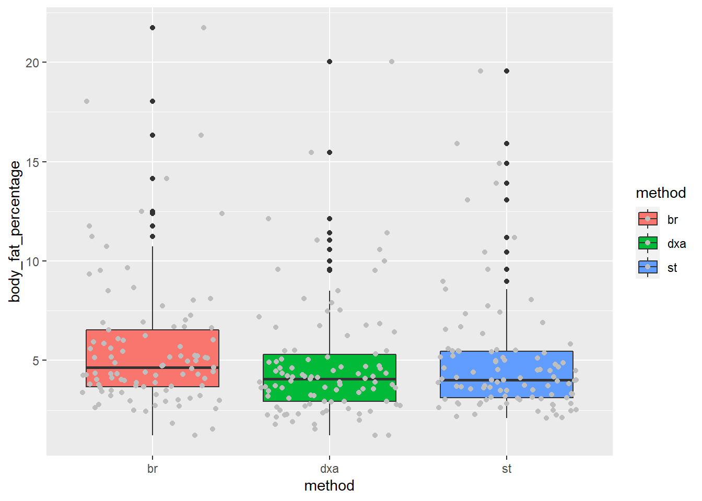

Chapter 8 Part 6: Simple Statistics with broom
8.1 Learning Objectives
- Learn about errors and warnings and where to ask for help
- Learn some basic Exploratory Data Analysis techniques
- Learn a basic analysis workflow for statistical modeling
- Learn about formulas and how to specify models using them
- Learn about t Tests and how to apply them to your dataset
- Learn and apply linear regression models
- Learn and apply Analysis of Variance (ANOVA)
8.2 Getting Help on Errors
8.2.1 Understanding the difference between warnings and errors
A warning is an indication that the data or arguments isn’t quite what the function expected.
You can usually run the code, but you should be careful about it and verify the output.
An error means that the code can’t execute at all given what you have given the function.
Errors can be difficult to understand, which is why
8.2.2 Googling is StandaRd pRactice foR eRrors
The first thing I do when I encounter an error is to search for the error. I usually start with Google.
I don’t know everything, and the odds are that I made a mistake in understanding the documentation.
There are some resources that I especially check (in order):
- RStudio Community (for
tidyverse): https://community.rstudio.com/ - Stack Overflow: http://stackoverflow.com/
- Biostars (for Bioinformatics): https://www.biostars.org/
- The package’s github page (especially issues)
8.2.3 Where do I ask for help?
I’m trying to be as helpful as I can, but I can’t answer all of your questions.
The following communities are extremely helpful to beginners:
- R for Data Science Community: https://r4ds.slack.com/
- RStudio Community: https://community.rstudio.com/
8.3 Caveat about statistics
This is not meant to be a comprehensive course in statistics. We want to show you some basic techniques, but you will need to dig further.
Danielle Navarro’s Learning Statistics with R is excellent and talks much more about statistics: https://learningstatisticswithr.com/
8.4 Introducing tidymodels
We will be using the broom package from the tidymodels set of packages to make the modeling easier to work with.
tidymodels attempts to unify all of the various modeling packages in a consistent interface.
broom works mostly with the output of models. One of the problems with R is that the many modeling packages are not consistent to work with. It can be just as difficult to get a p-value out of a model as it is to run it on some data! broom simpliflies this a lot.
There are 3 main functions in broom:
tidy()- This is where you get most of the output you want, including coefficients and p-valuesglance()- additional measures on your model, including R-squared, log likelihood, and AIC/BICaugment()- make predictions with your model using new data
We will mostly use tidy() and glance() for right now.
8.5 T-tests
8.5.1 The Dataset
A study by Goran et.al (1996) examined the accuracy of some widely used body-composition techniques for children using three different methods:
- dual-energy X-ray absorptiometry (
dxa) technique, - skin-fold thickness (
st), - bioelectric resistance (
br).
Subjects were children between 4 and 10 years old. Data were collected on 98 subjects (49 males and 49 females).
One purpose of the study was to determine whether there was a difference in fat mass measurements using DXA (considered the gold standard method) compared to the skin-fold thickness method.
We also wish to determine if DXA levels are significantly different between males and females.
8.5.2 Getting set up
body_comp <- read_csv('data/body_composition.csv', na="NA") %>%
clean_names() %>%
mutate(gender = factor(gender, levels=c("1", "0")))
head(body_comp)## # A tibble: 6 x 4
## dxa st br gender
## <dbl> <dbl> <dbl> <fct>
## 1 3.65 4.55 4.26 1
## 2 3.92 2.82 6.09 0
## 3 7.53 3.89 5.12 0
## 4 6.24 5.49 8.04 0
## 5 10.6 10.5 14.2 0
## 6 9.58 11.2 12.4 08.5.3 Exploratory Data Analysis
Before we do any statistical tests on our data, we should first visualize it.
Since our ultimate goal is to examine the differences between bodyfat measurement methods, let’s create boxplots that illustrate this difference, if any.
Notice that the aes() for ggplot() only accepts one x value and one y value, but we have three columns we’d like to compare (dxa, st, br). So, we need to convert our data to long format using pivot_longer().
body_comp_long <- body_comp %>%
pivot_longer(cols = c('dxa', 'st', 'br'),
names_to = 'method',
values_to = 'body_fat_percentage')
head(body_comp_long)## # A tibble: 6 x 3
## gender method body_fat_percentage
## <fct> <chr> <dbl>
## 1 1 dxa 3.65
## 2 1 st 4.55
## 3 1 br 4.26
## 4 0 dxa 3.92
## 5 0 st 2.82
## 6 0 br 6.09Now that we’ve done that, we can set x = method and y = body_fat_percentage.
ggplot(body_comp_long) +
aes(x = method, y = body_fat_percentage, fill = method) +
geom_boxplot() +
geom_jitter(color="grey")
It appears that our measurements are close to one another, but there are some noticable differences.
8.5.4 t-test
Briefly, a t-test should be used when examining whether the mean between two groups are similar This means that the measurements must be numeric (there are other tests for categorical data).
The null hypothesis for a t-test is that the two means are equal, and the alternative is that they are not.
One purpose of the study was to determine whether there was a difference in fat mass measurements using
dxa(considered the gold standard method) compared to the skin-fold thickness method (st).
Below, we will use a paired t-test. Paired simply means that each group (dxa and st) each contain measurements for the same subject on corresponding rows. If body fat measurements were collected using dxa for children in Group A and st for a separate set of children in Group B, then we would not use a paired t-test.
HYPOTHESIS: There is a difference in mean fat mass measurements between the DXA and skin-fold thickness (ST) methods.
NULL HYPOTHESIS: There is no difference in mean fat mass measurements between the two methods.
We also need to set a significance threshold. We’ll set it at 0.05.
body_comp_dxa_st <- body_comp_long %>%
filter(method %in% c("dxa", "st"))
tidy_output2 <- t.test(body_comp$dxa, body_comp$st, paired=TRUE) %>%
tidy()
tidy_output <-
t.test(body_fat_percentage ~ method,
paired=TRUE,
data=body_comp_dxa_st) %>%
tidy()
tidy_output2## # A tibble: 1 x 8
## estimate statistic p.value parameter conf.low conf.high method alternative
## <dbl> <dbl> <dbl> <dbl> <dbl> <dbl> <chr> <chr>
## 1 -0.207 -1.78 0.0774 97 -0.438 0.0232 Paired t-~ two.sidedWe see that p.value is equal to ~0.634; this means we cannot reject the null hypothesis (i.e., the difference in body fat measurements between dxa and st are not statistically different from one another).
8.5.5 Your Turn
Try running t.test, comparing dxa and br using body_comp_long. Hint: You’ll have to filter the method like above.
body_comp <- body_comp %>%
tidyr::drop_na()
body_comp_long <- body_comp %>%
pivot_longer(cols = c('dxa', 'st', 'br'),
names_to = 'method',
values_to = 'body_fat_percentage')
body_comp_dxa_sf <- body_comp_long %>%
filter(method %in% c("dxa", "br"))
tidy_output <-
t.test(body_fat_percentage ~ method,
paired=TRUE,
data=body_comp_dxa_sf) %>%
tidy()
tidy_output8.7 Let’s build a simple linear model
We’ve established that there is a correlation between dxa and st. Can we use st to predict dxa?
y = ax + b
## # A tibble: 2 x 5
## term estimate std.error statistic p.value
## <chr> <dbl> <dbl> <dbl> <dbl>
## 1 (Intercept) 0.275 0.215 1.28 2.05e- 1
## 2 st 0.903 0.0367 24.6 3.17e-43The predicted line through the data is:
dxa = 0.295 + 0.903 * st
8.7.1 Adding another variable
What if we included gender in our model? Our model can accept factors as inputs.
## # A tibble: 3 x 5
## term estimate std.error statistic p.value
## <chr> <dbl> <dbl> <dbl> <dbl>
## 1 (Intercept) 0.0646 0.224 0.288 7.74e- 1
## 2 st 0.888 0.0362 24.5 6.93e-43
## 3 gender0 0.577 0.222 2.60 1.09e- 2In this case, gender is a useful predictor of dxa, since the p-value is less than our threshold of 0.05.
However, if we did use the equation, it would correspond to this equation:
dxa = 0.097 + 0.889 * st + 0.536 * gender0
The factor gender here is recoded as a “dummy” variable, and reading it is a little confusing. Note that it says gender0 and not gender. That’s because it’s coding gender = 0 as 1 here, and 0, if gender is 1.
Dummy variables are very confusing. http://www.sthda.com/english/articles/40-regression-analysis/163-regression-with-categorical-variables-dummy-coding-essentials-in-r/
8.7.2 Your Turn
Try adding br as a term in the model. How does it change the p-value of st?
## # A tibble: 3 x 5
## term estimate std.error statistic p.value
## <chr> <dbl> <dbl> <dbl> <dbl>
## 1 (Intercept) 0.111 0.208 0.532 5.96e- 1
## 2 st 0.699 0.0683 10.2 5.78e-17
## 3 br 0.213 0.0615 3.46 8.20e- 48.8 Analysis of Variance (ANOVA) (Optional)
We’ve determined that there isn’t a statistical difference between dxa and st, but we also meausured bodyfat using bioelectric resistance, br.
Maybe we should see if it measures differently from the other two methods. Because a t-test can only be used to measure the differences in means between two groups, we’d have to use multiple t-tests.
But wait, should we do that right away? No, because we’ll run into the Multiple Comparisons Problem!
So rather than performing multiple t-tests, we first want to examine whether any of the groups is different from the rest of the groups using an ANOVA (aov()).
aov() uses the formula interface. The tilde (~) can be translated to “is a function of”. Below, we are testing whether body fat percentage is a function of the type of body fat measurement method. We pipe the output of aov() to summary() to get a clearer idea of the output of the ANOVA.
## # A tibble: 2 x 6
## term df sumsq meansq statistic p.value
## <chr> <dbl> <dbl> <dbl> <dbl> <dbl>
## 1 method 2 40.7 20.3 2.01 0.136
## 2 Residuals 290 2935. 10.1 NA NAThe value p.value is what we’re interested in. Because it is greater than 0.05, we can conclude that none of the measurement methods is significantly different from the others, and there is no reason to perform multiple t-tests on our dataset.
8.8.1 Post-hoc Tests
Now if our F statistic probability had come back below 0.05, then we could perform multiple post-hoc t-tests. However, we would need to account for false positives by using a correction method (e.g., Bonferroni).
pairwise.t.test(body_comp_long$body_fat_percentage,
body_comp_long$method,
p.adjust = "bonferroni") %>%
tidy()## # A tibble: 3 x 3
## group1 group2 p.value
## <chr> <chr> <dbl>
## 1 dxa br 0.167
## 2 st br 0.432
## 3 st dxa 18.8.2 More about the Multiple Testing Problem
Consider what a p-value of 0.05 actually means: if a test is performed at the 0.05 level and the corresponding null hypothesis is true, there is only a 5% chance of incorrectly rejecting the null hypothesis. This is an okay risk to take given that we are only performing the t-test once. But if we were to perform the t-test 1,000 times on data where all null hypotheses were true, the expected number of incorrect rejections (also known as false positives or Type I errors) would be 50!
8.8.3 Acknowledgements
Written by Aaron Coyner and Ted Laderas